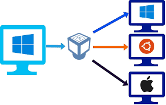
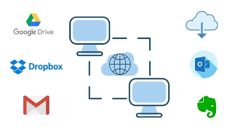
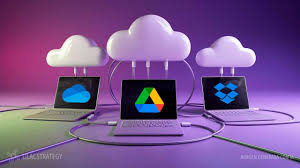
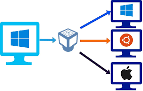
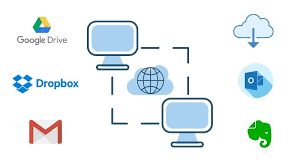
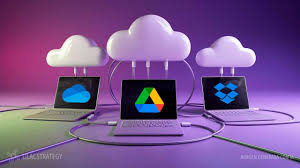

Tecnologías Cloud
Por Ángel Valle Cotera U22226697
¿Qué son las Tecnologías Cloud?
Las tecnologías en la nube, o "Cloud Computing", permiten acceder a servicios informáticos (como almacenamiento, bases de datos, servidores, redes y software) a través de internet. Esto elimina la necesidad de tener infraestructura física compleja y costosa.
Gracias a estas tecnologías, empresas y usuarios pueden escalar recursos según sus necesidades, pagar solo por lo que usan y acceder desde cualquier lugar del mundo.
Tipos de Servicios en la Nube
- IaaS (Infraestructura como Servicio): Proporciona recursos básicos como servidores virtuales, redes y almacenamiento. Ejemplo: Amazon Web Services (AWS).
- PaaS (Plataforma como Servicio): Ofrece plataformas que permiten desarrollar, probar y desplegar aplicaciones. Ejemplo: Google App Engine.
- SaaS (Software como Servicio): Software disponible a través de internet sin necesidad de instalación. Ejemplo: Gmail, Microsoft 365.
Beneficios del Cloud Computing
Entre los principales beneficios de adoptar tecnologías Cloud están:
- Reducción de costos operativos
- Escalabilidad y flexibilidad
- Acceso remoto a recursos
- Actualizaciones automáticas
- Mejor colaboración en línea
Galería Cloud
 




